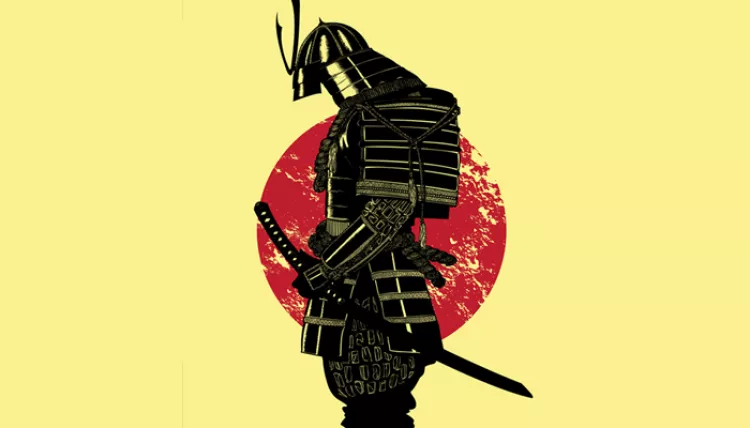

|  | Home | princípios | Referências |
Esse principio do bushido esta muito relacionado ao quesito de tomada de decisão, pois um seguidor do bushido deve tomar decisões justas
O princípio da coragem fala que se deve viver intensamente e ao máximo, mas ressalta que ser corajoso não é agir igual um idiota e deve-se ter inteligente e cauteloso por trás de suas ações.
O princípio da compaixão fala aqui o praticante deve treinar arduamente o bem, o amor, a amizade, a solidariedade e a nobreza pois são sentimentos extremamente honrosos.
O princípio do respeito fala que o praticante deve ter compaixão e não ser cruel, pois não há necessidade de demonstrar sua força a seus inimigos, pois alguém que vive apenas para provar seu poder não se difere de um animal e todas as pessoas devem ser respeitadas não pela sua coragem, mas sim pela sua forma de tratar os outros.
O princípio da honestidade fala que nunca deve mentir, pois é um ato covarde e desonroso uma vez que você faça uma promessa nada pode te impedir de cumpri-la.
O princípio da honra fala-se que o praticante só tem um juiz de sua honra, ele próprio, pois as escolhas que você faz e como você trabalha são reflexo de quem você realmente é.
O princípio da lealdade diz que o praticante deve ser leal àqueles que estão sob seus cuidados e deve permanecer fiel a quem é responsável.